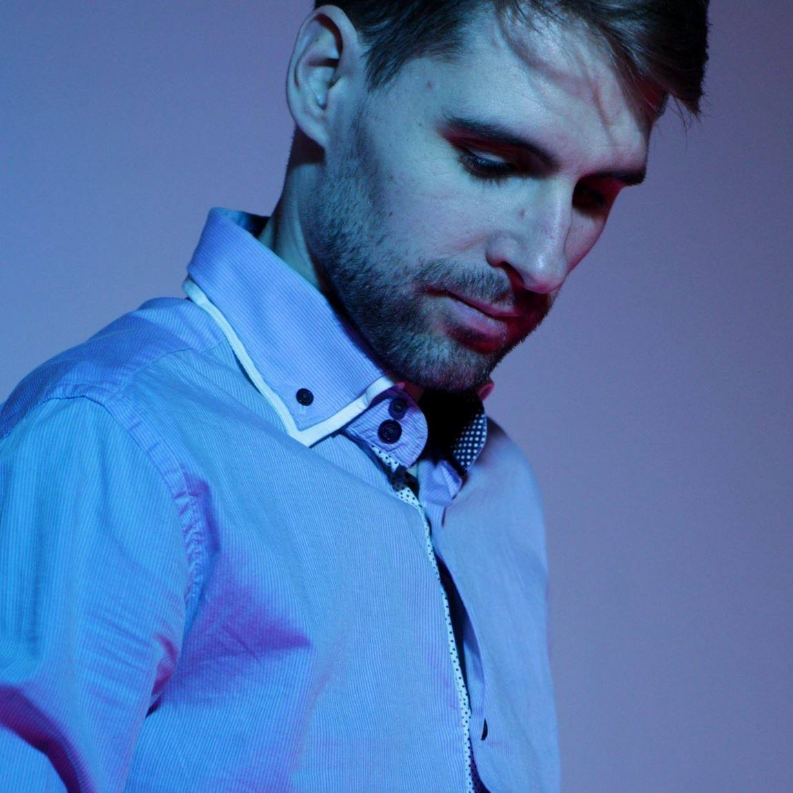

About
Jakob Gille began his formal education at the HfM Dresden, where he studied composition and music theory. His passion for sound and experimentation led him to institutions such as the ZKM Karlsruhe and the Darmstädter Ferienkurse. There, he worked with the Akusmonium GRM Paris and the Studio für elektronische Musik HfM Dresden respectively.
He is the driving force behind Into Sound, an initiative that has organised multiple concerts in Berlin for 3D loudspeaker setups since its inception in 2018. His compositions have been played several times at the Medium Sonorum concert at the Ars Electronica Linz, in Ústí nad Labem in combination with the Ambisonics Summer School 2023, at the Festival Izis in Koper and the Apnées Festival in Grenoble. In 2023, he won an honorable mention at ISAC in Pesaro.
In his compositions and research, he specializes in the work with Ambisonics and immersive Field Recordings. Currently, he is pursuing a master's degree in computer music and sound art at KUG & IEM Graz.
